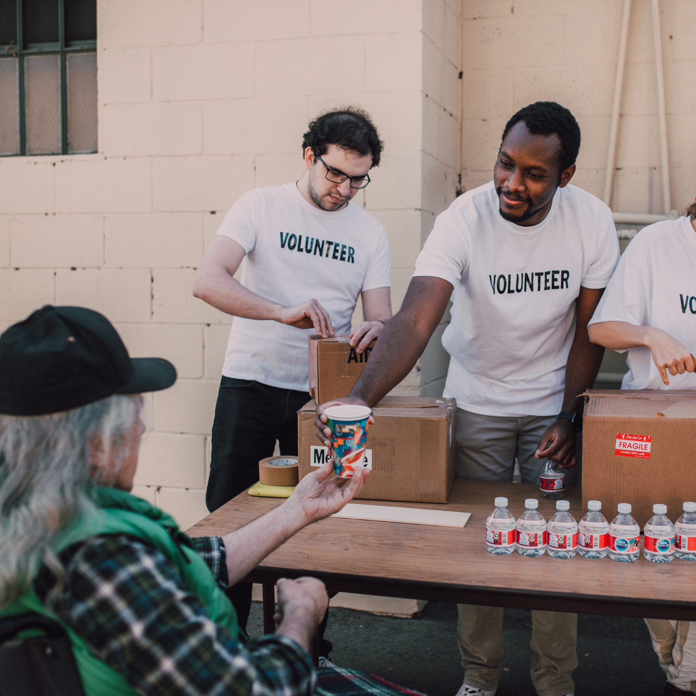

Community Outreach
Our Community Outreach Ministry is at the heart of service in action—engaging with the needs of the local population through charitable events, practical assistance, and meaningful interactions. From distributing essential supplies and providing free health services to offering workshops that empower and uplift, the ministry exemplifies Christ’s love through genuine, hands-on compassion. It is a bridge between the church and the community, helping build stronger, more connected lives.

Eld. Donny Halder
Outreach & Prison Ministries Incharge